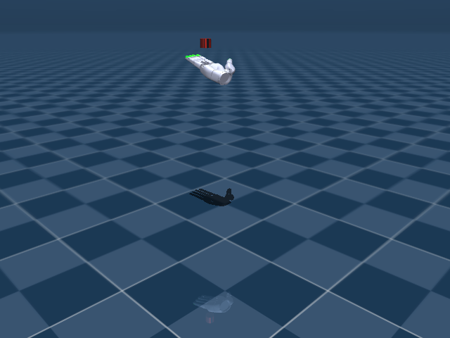

Sharpa In-Hand Rotation
任务目标
训练 Sharpa Wave 灵巧手旋转圆柱物体，并利用接触/触觉相关观测保持稳定操作。

图片由
_tools/render_static_images.py使用src/unilab/assets/robots/sharpa_wave/scene.xml的 MuJoCo scene 离屏渲染生成；如果当前环境无法启用 EGL/OSMesa，生成 manifest 会记录失败原因。
证据索引
| 项目 | 内容 |
|---|---|
| 任务类别 | 灵巧操作 |
| 机器人 | sharpa_wave |
| 代表 scene | src/unilab/assets/robots/sharpa_wave/scene.xml |
| 代表源码 | src/unilab/envs/manipulation/sharpa_inhand/rotation.py |
| 代表 owner YAML | conf/appo/task/sharpa_inhand/mujoco.yaml |
| 动作维度 | 22 |
Registry 与 Owner
| 注册名 | 后端 | 配置类 | 配置源码 |
|---|---|---|---|
| SharpaInhandRotation | motrix, mujoco | SharpaInhandRotationCfg | src/unilab/envs/manipulation/sharpa_inhand/rotation.py |
| 算法组 | 后端 | training.task_name | owner YAML |
|---|---|---|---|
| appo | motrix | SharpaInhandRotation | conf/appo/task/sharpa_inhand/motrix.yaml |
| appo | mujoco | SharpaInhandRotation | conf/appo/task/sharpa_inhand/mujoco.yaml |
| hora_distill | mujoco | SharpaInhandRotation | conf/hora_distill/task/sharpa_inhand/mujoco.yaml |
| sac | mujoco | SharpaInhandRotation | conf/offpolicy/task/sac/sharpa_inhand/mujoco_hora.yaml |
| ppo | motrix | SharpaInhandRotation | conf/ppo/task/sharpa_inhand/motrix.yaml |
| ppo | mujoco | SharpaInhandRotation | conf/ppo/task/sharpa_inhand/mujoco.yaml |
代码级执行流
这部分不再用通用关键词套模板，而是为 sharpa_inhand 单独写源码导读。源码片段只负责提供证据；每节说明都围绕本任务自己的配置、状态、观测、动作和 reward 语义展开。
| 阶段 | 证据位置 | 代码级说明 |
|---|---|---|
| 1. Hydra owner | conf/appo/task/sharpa_inhand/mujoco.yaml | 训练命令先 compose owner YAML。这里确定 training.task_name、后端身份、obs_groups、reward scale 和 env override。 |
| 2. Registry 构造 Env | src/unilab/envs/manipulation/sharpa_inhand/rotation.py | @registry.envcfg 注册配置类，@registry.env 注册后端实现类；训练脚本只调用 registry，不直接 new 任务类。 |
| 3. Reset/初始状态 | src/unilab/assets/robots/sharpa_wave/scene.xml | env 从 scene keyframe 或 motion/grasp cache 取初态，再通过 reset randomization 改写 qpos/qvel/info。 |
| 4. Obs dict | src/unilab/envs/manipulation/sharpa_inhand/rotation.py | env 读取 backend 传感器和 info，返回 dict；learner 根据 obs_groups_spec 和 owner algo.obs_groups 选择 actor/critic 输入。 |
| 5. Action 到控制目标 | src/unilab/envs/manipulation/sharpa_inhand/rotation.py | policy 输出先按 action scale / 控制顺序映射到 actuator，再由 backend step 推进仿真。 |
| 6. Reward dispatch | src/unilab/envs/manipulation/sharpa_inhand/rotation.py | 源码把 reward key 映射到函数，owner YAML 的 scale 决定每项奖励/惩罚是否启用以及权重。 |
| 7. Termination | src/unilab/envs/manipulation/sharpa_inhand/rotation.py | env 根据高度、姿态、接触、参考轨迹误差、物体状态或能量阈值生成 done/terminated。 |
本任务阅读重点
| 阅读重点 |
|---|
| Sharpa rotation 是 22 DoF 灵巧手旋转圆柱体，和 Allegro 的球体旋转不同。 |
| obs 包含手指、物体、动作历史以及 Sharpa 可选 tactile/contact 信息；action 控制 22 个 hand actuator。 |
| reward 需要看旋转进度、物体稳定和接触/动作惩罚，不应按 Allegro 直接替换名字。 |
本任务注册入口
| 注册名 | 配置类 | 可用后端 |
|---|---|---|
| SharpaInhandRotation | SharpaInhandRotationCfg | motrix, mujoco |
本任务源码锚点
| 小节 | 源码文件 | 明确锚点 |
|---|---|---|
| 配置：Sharpa rotation | src/unilab/envs/manipulation/sharpa_inhand/rotation.py | SharpaInhandRotationCfg, SharpaInhandRotation |
| Reset：手与圆柱体 | src/unilab/envs/manipulation/sharpa_inhand/rotation.py | build_reset_plan, SharpaInhandRotationDRProvider |
| Obs：手/物体/history | src/unilab/envs/manipulation/sharpa_inhand/rotation.py | obs_groups_spec, _compute_obs_from_inputs |
| Action：22 维手部目标 | src/unilab/envs/manipulation/sharpa_inhand/rotation.py | apply_action, actions_np |
| Reward/Termination | src/unilab/envs/manipulation/sharpa_inhand/rotation.py | _compute_reward, update_state |
关键源码逐段解释（按本任务手写）
配置：Sharpa rotation
| 本任务人工导读 |
|---|
| cfg 设置 critic_info_dim、obs lag、物体和 Sharpa 专用参数。 |
| 场景 include Sharpa 手和圆柱物体。 |
# src/unilab/envs/manipulation/sharpa_inhand/rotation.py
# 注册 Sharpa 圆柱体 in-hand rotation 任务。
@registry.envcfg("SharpaInhandRotation")
@dataclass
class SharpaInhandRotationCfg(SharpaInhandBaseCfg):
# critic_info_dim 会在 env 初始化时按特权信息开关校正。
critic_info_dim: int = 9
# reward_config 由 Hydra owner YAML 注入，避免脚本层解释奖励。
reward_config: RewardConfig | None = None
# 调试开关：强制零动作以验证 reset/obs/reward 链路。
zero_action_test_mode: bool = False
Reset：手与圆柱体
| 本任务人工导读 |
|---|
| reset provider 构造手指、物体 pose 和随机化 payload。 |
| grasp/cache 或随机初始化都只在 reset 冷路径处理。 |
# src/unilab/envs/manipulation/sharpa_inhand/rotation.py
def build_reset_plan(self, env: Any, env_ids: np.ndarray) -> ResetPlan:
num_reset = len(env_ids)
if num_reset == 0:
# 没有 env 需要 reset 时仍返回空 ResetPlan，保持 DR manager contract。
return ResetPlan(
env_ids=env_ids,
qpos=np.zeros((0, env.nq), dtype=np.float64),
qvel=np.zeros((0, env.nv), dtype=np.float64),
info_updates={},
randomization=None,
)
# 下面的随机化都发生在 reset 冷路径，避免热路径解析 asset 或 backend 私有能力。
friction_scale = env._sample_friction_scale(num_reset)
randomized_mass = env._sample_object_mass(num_reset)
randomized_com_offset = env._sample_object_com_offset(num_reset)
gravity = env._sample_reset_gravity(num_reset)
# PD 增益按 reset env 采样，用于随机化和后续虚拟 torque reward。
p_gain, d_gain = self._sample_reset_pd_gains(env, num_reset, dtype=get_global_dtype())
# 每个 object scale 对应一个 grasp cache，按 env.scale_ids 抽取稳定初态。
grasp_cache = self._load_grasp_cache(env)
sampled_pose = sample_scale_grasp_caches(grasp_cache, env.scale_ids[env_ids])
# cache 布局：手指关节、物体位置、物体四元数。
hand_qpos = sampled_pose[:, : env._num_action]
object_pos = sampled_pose[:, env._num_action : env._num_action + 3]
object_quat = sampled_pose[:, env._num_action + 3 : env._num_action + 7]
# 旋转轴写入 info，reward 每步会按该轴投影物体角速度。
rot_axis = np.broadcast_to(env._rot_axis, (num_reset, 3)).copy().astype(np.float64)
# Sharpa qpos 将手部关节和物体 free joint 分别写入对应 slice。
qpos = np.zeros((num_reset, env.nq), dtype=np.float64)
qpos[:, : env._num_action] = hand_qpos
qpos[:, env._obj_pos_slice] = object_pos
qpos[:, env._obj_quat_slice] = object_quat
qvel = np.zeros((num_reset, env.nv), dtype=np.float64)
# 终止高度窗口围绕采样到的物体高度生成，适配不同 scale/cache 初态。
height_range = env.cfg.reset_height_upper - env.cfg.reset_height_lower
reset_height_lower = object_pos[:, 2] - 0.5 * height_range
reset_height_upper = object_pos[:, 2] + 0.5 * height_range
# info_updates 初始化 obs history、critic info、上一帧物体/手状态和随机化参数。
info_updates = self._build_info_updates(
env,
env_ids=env_ids,
hand_qpos=hand_qpos,
object_pos=object_pos,
object_quat=object_quat,
reset_height_lower=reset_height_lower,
reset_height_upper=reset_height_upper,
rot_axis=rot_axis,
p_gain=p_gain,
d_gain=d_gain,
friction_scale=friction_scale,
randomized_mass=randomized_mass,
randomized_com_offset=randomized_com_offset,
gravity=gravity,
)
# Match the source task by clearing any cached external object force on reset.
# interval force DR 的缓存力在 reset 时清零，避免跨 episode 残留。
env._random_object_force[env_ids] = 0.0
# 触觉 history 与 qpos 同步重置，首帧 obs 不带旧接触。
env._clear_tactile_history(env_ids)
# ResetPlan 将物体质量/COM/摩擦/gravity/PD 等随机化交给 backend。
return ResetPlan(
env_ids=env_ids,
qpos=qpos,
qvel=qvel,
info_updates=info_updates,
randomization=env._build_reset_randomization(
num_reset,
p_gain=p_gain,
d_gain=d_gain,
friction_scale=friction_scale,
randomized_mass=randomized_mass,
randomized_com_offset=randomized_com_offset,
gravity=gravity,
),
)# src/unilab/envs/manipulation/sharpa_inhand/rotation.py
class SharpaInhandRotationDRProvider(DomainRandomizationProvider):
def validate(self, env: Any, capabilities: DomainRandomizationCapabilities) -> None:
# 先验证通用 reset 随机化能力，再检查 Sharpa 专用扩展。
unsupported = validate_common_reset_randomization(env, capabilities)
domain_rand = getattr(env.cfg, "domain_rand", None)
if domain_rand is not None and getattr(domain_rand, "randomize_gravity_direction", False):
if getattr(domain_rand, "randomize_gravity", False):
# 两种 gravity 随机化模式互斥，避免同一 reset 同时写两套重力。
raise ValueError(
"Use only one Sharpa gravity randomization mode: "
"domain_rand.randomize_gravity_direction or domain_rand.randomize_gravity"
)
if not capabilities.supports_reset_term(RESET_TERM_GRAVITY):
unsupported = unsupported | frozenset({RESET_TERM_GRAVITY})
if (
domain_rand is not None
and domain_rand.force_scale > 0.0
and not capabilities.supports_interval_body_force
):
# 物体外力扰动依赖 backend interval body force 能力。
raise NotImplementedError(
f"{env._backend.backend_type} backend does not support interval body force perturbation"
)
if domain_rand is not None and domain_rand.randomize_pd_gains:
if not capabilities.supports_reset_term(RESET_TERM_KP):
unsupported = unsupported | frozenset({RESET_TERM_KP})
if not capabilities.supports_reset_term(RESET_TERM_KD):
unsupported = unsupported | frozenset({RESET_TERM_KD})
if (
domain_rand is not None
and domain_rand.randomize_com
and not capabilities.supports_reset_term(RESET_TERM_BODY_IPOS)
):
unsupported = unsupported | frozenset({RESET_TERM_BODY_IPOS})
if (
domain_rand is not None
and domain_rand.randomize_mass
and not capabilities.supports_reset_term(RESET_TERM_BODY_MASS)
):
unsupported = unsupported | frozenset({RESET_TERM_BODY_MASS})
if (
domain_rand is not None
and domain_rand.randomize_friction
and not capabilities.supports_reset_term(RESET_TERM_GEOM_FRICTION)
):
unsupported = unsupported | frozenset({RESET_TERM_GEOM_FRICTION})
if unsupported:
names = ", ".join(sorted(unsupported))
# 明确报出缺失 reset term，避免静默跳过 DR。
raise NotImplementedError(
f"{env._backend.backend_type} backend does not support reset randomization terms: {names}"
)
def build_init_randomization_plan(self, env: Any) -> InitRandomizationPlan | None:
# object scale 改变 geom size，属于初始化随机化而不是每步热路径。
base_size = getattr(env, "_object_geom_base_size", None)
if base_size is None:
return None
model_variants = tuple(
ModelVariantSpec(
geom_size_overrides=(
GeomSizeOverride(
geom_name=env.cfg.object_geom_name,
size=tuple(np.asarray(base_size * scale, dtype=np.float64)),
),
)
)
for scale in np.asarray(env.scale_values, dtype=np.float64)
)
return InitRandomizationPlan(
# 每个 env 的 scale_ids 决定使用哪个预构建 model variant。
model_assignments=np.asarray(env.scale_ids, dtype=np.int32).copy(),
model_variants=model_variants,
)
def _load_grasp_cache(self, env: Any) -> tuple[np.ndarray, ...]:
"""Load one grasp cache file for each configured object scale.
Args:
env: Sharpa rotation env instance.
Returns:
Tuple of cache arrays ordered the same as ``env.scale_values``.
"""
if getattr(env, "_grasp_cache", None) is not None:
return cast(tuple[np.ndarray, ...], env._grasp_cache)
grasp_caches: list[np.ndarray] = []
missing_files: list[str] = []
for scale_value in np.asarray(env.scale_values, dtype=np.float64):
cache_file = resolve_grasp_cache_file(env.cfg.grasp_cache_path, float(scale_value))
# Auto-download from HF if the cache file is missing locally.
resolved = cast(str, resolve_grasp_cache_files(str(cache_file)))
cache_file = Path(resolved)Obs：手/物体/history
| 本任务人工导读 |
|---|
| obs 维度由 policy frame 和 obs_lag_steps 决定。 |
| critic 可额外接收物体/接触相关信息。 |
# src/unilab/envs/manipulation/sharpa_inhand/rotation.py
@property
def obs_groups_spec(self) -> dict[str, int]:
# policy frame 乘 obs_lag_steps 得到 actor proprio/history 维度。
policy_obs_dim = self._cfg.obs_lag_steps * self._policy_frame_dim()
if self._observation_mode == "flattened":
# flattened 模式把 critic info 合并到 obs 单组里。
return {"obs": policy_obs_dim + self._cfg.critic_info_dim}
# separated 模式输出 actor obs 和 critic 特权组。
return {"obs": policy_obs_dim, "critic": policy_obs_dim + self._cfg.critic_info_dim}# src/unilab/envs/manipulation/sharpa_inhand/rotation.py
def _compute_obs_from_inputs(
self,
info: dict[str, Any],
dof_pos: np.ndarray,
object_pos: np.ndarray,
tactile: np.ndarray,
contact_pos: np.ndarray,
) -> dict[str, np.ndarray]:
# prev_targets 是上一帧手部 position target；缺省时用当前关节角。
targets = np.asarray(info.get("prev_targets", dof_pos), dtype=self._np_dtype)
# policy frame 拼接手指角、目标、触觉和接触位置。
frame = self._build_policy_frame(
dof_pos=dof_pos,
targets=targets,
tactile=tactile,
contact_pos=contact_pos,
)
batch_size = int(frame.shape[0])
history = info.get("obs_lag_history")
if history is None:
# reset 首帧用当前 frame 重复填满 history，避免未初始化历史。
history = repeat_obs_history(frame, self._cfg.obs_history_len).astype(self._np_dtype)
else:
history = np.asarray(history, dtype=self._np_dtype)
# 常规 step 左移 history，并把最新 policy frame 写入末尾。
history[:, :-1] = history[:, 1:]
history[:, -1] = frame
info["obs_lag_history"] = history
# proprio_hist 是更长历史缓存，供特定观测/部署组件读取。
info["proprio_hist"] = self._update_proprio_history(history)
# actor 只取最近 obs_lag_steps 帧并展平。
obs = np.asarray(
history[:, -self._cfg.obs_lag_steps :].reshape(batch_size, -1),
dtype=self._np_dtype,
)
# critic_info 额外包含物体位置/随机化特权信息。
critic_info = self._build_critic_info(info, batch_size=batch_size, object_pos=object_pos)
return self._pack_observations(obs, critic_info)Action：22 维手部目标
| 本任务人工导读 |
|---|
| action 裁剪后映射到 Sharpa 22 个 actuator。 |
| 圆柱体 free joint 由接触动力学驱动，不在 action 中。 |
# src/unilab/envs/manipulation/sharpa_inhand/rotation.py
def apply_action(self, actions: np.ndarray, state: NpEnvState) -> np.ndarray:
# Sharpa action 是 22 维手部 actuator 输入，先转成 env 全局 dtype。
actions_np = np.asarray(actions, dtype=self._np_dtype)
if self._zero_action_test_mode:
# 调试模式强制零动作，可验证 reset/obs/reward 在无策略控制下的行为。
actions_np = np.zeros_like(actions_np, dtype=self._np_dtype)
# 真实裁剪和 position target 映射由 SharpaInhandBaseEnv 统一处理。
return super().apply_action(actions_np, state)Reward/Termination
| 本任务人工导读 |
|---|
| reward 关注旋转、物体稳定、动作/力矩和接触项。 |
Sharpa rotation 直接在 _compute_reward 中遍历 reward_config.scales，不使用 _init_reward_functions 分发表。 |
# src/unilab/envs/manipulation/sharpa_inhand/rotation.py
def _compute_reward(
self,
info: dict[str, Any],
dof_pos: np.ndarray,
dof_vel: np.ndarray,
object_pos: np.ndarray,
object_linvel: np.ndarray,
object_angvel: np.ndarray,
torques: np.ndarray,
) -> np.ndarray:
# rot_axis 可被 reset info 覆盖，默认使用 env 配置的旋转轴。
rot_axis = np.asarray(
info.get("rot_axis", np.broadcast_to(self._rot_axis, (self._num_envs, 3))),
dtype=self._np_dtype,
)
# rotate_reward 是物体角速度在目标轴上的投影，并按配置裁剪。
rotate_reward = np.clip(
np.sum(object_angvel * rot_axis, axis=1),
self._reward_cfg.angvel_clip_min,
self._reward_cfg.angvel_clip_max,
)
object_linvel_penalty = np.sum(np.abs(object_linvel), axis=1)
# 手型偏差、虚拟 torque 和做功都是稳定抓持/能耗约束。
pos_diff_penalty = np.sum(np.square(dof_pos - self.default_angles), axis=1)
torque_penalty = np.sum(np.square(torques), axis=1)
work_penalty = np.square(np.sum(torques * dof_vel, axis=1))
object_pos_anchor = self._resolve_object_pos_anchor(info, object_pos.shape[0])
# object_pos_reward 鼓励物体留在 reset 时定义的手内 anchor 附近。
object_pos_reward = 1.0 / (np.linalg.norm(object_pos - object_pos_anchor, axis=1) + 0.001)
# reward_terms 的名字必须与 reward_config.scales 对齐。
reward_terms: dict[str, np.ndarray] = {
"rotate": np.asarray(rotate_reward, dtype=self._np_dtype),
"obj_linvel": np.asarray(object_linvel_penalty, dtype=self._np_dtype),
"pose_diff": np.asarray(pos_diff_penalty, dtype=self._np_dtype),
"torque": np.asarray(torque_penalty, dtype=self._np_dtype),
"work": np.asarray(work_penalty, dtype=self._np_dtype),
"object_pos": np.asarray(object_pos_reward, dtype=self._np_dtype),
}
reward = np.zeros((self._num_envs,), dtype=self._np_dtype)
step_count = info.get("steps", np.zeros((self._num_envs,), dtype=np.uint32))
should_log = self._enable_reward_log and (int(step_count[0]) % 4 == 0)
log = {} if should_log else info.get("log", {})
for name, scale in self._reward_cfg.scales.items():
if scale == 0.0 or name not in reward_terms:
continue
# 只对 YAML 启用的 reward 项加权累加。
weighted = reward_terms[name] * scale
reward += weighted
if should_log:
log[f"reward/{name}"] = float(np.mean(weighted))
if should_log:
log["reward/total"] = float(np.mean(reward))
info["log"] = log
# 乘 ctrl_dt 后返回每步积分口径的奖励。
return np.asarray(reward, dtype=self._np_dtype) * self._cfg.ctrl_dt# src/unilab/envs/manipulation/sharpa_inhand/rotation.py
def update_state(self, state: NpEnvState) -> NpEnvState:
# 当前手部和物体状态来自 backend，是 reward/obs/termination 的同一帧输入。
dof_pos = self.get_hand_dof_pos()
dof_vel = self.get_hand_dof_vel()
object_pos = self.get_object_pos()
object_quat = self.get_object_quat()
prev_object_pos = np.asarray(
state.info.get("prev_object_pos", object_pos), dtype=self._np_dtype
)
prev_object_quat = np.asarray(
state.info.get("prev_object_quat", object_quat), dtype=self._np_dtype
)
# 通过位置差分估计物体线速度。
object_linvel = (object_pos - prev_object_pos) / self._cfg.ctrl_dt
# 通过四元数相对旋转估计物体角速度，避免自己手写欧拉差分。
object_angvel = (
np_quat_to_axis_angle(np_quat_mul(object_quat, np_quat_conjugate(prev_object_quat)))
/ self._cfg.ctrl_dt
)
targets = np.asarray(
state.info.get(
"prev_targets",
np.broadcast_to(self.default_angles, (self._num_envs, self._num_action)).copy(),
),
dtype=self._np_dtype,
)
p_gain, d_gain = self._resolve_pd_gains(state.info)
# Explicit virtual torque used for reward parity with source Sharpa formulation.
# 显式虚拟 torque 用 PD 公式计算，不依赖 backend 私有力矩读取。
virtual_torques = np.asarray(
p_gain * (targets - dof_pos) - d_gain * dof_vel,
dtype=self._np_dtype,
)
# 触觉和接触位置进入 policy frame，帮助策略判断圆柱体是否稳定受控。
tactile = self._compute_tactile_observation()
contact_pos = self._compute_contact_positions(tactile)
# reward 使用旋转、物体稳定、手型/力矩/做功等项。
reward = self._compute_reward(
state.info,
dof_pos=dof_pos,
dof_vel=dof_vel,
object_pos=object_pos,
object_linvel=object_linvel,
object_angvel=object_angvel,
torques=virtual_torques,
)
reset_height_lower = np.asarray(
state.info.get(
"reset_height_lower",
np.full((self._num_envs,), self._cfg.reset_height_lower, dtype=self._np_dtype),
),
dtype=self._np_dtype,
)
reset_height_upper = np.asarray(
state.info.get(
"reset_height_upper",
np.full((self._num_envs,), self._cfg.reset_height_upper, dtype=self._np_dtype),
),
dtype=self._np_dtype,
)
# 物体高度超出 reset 窗口表示掉落或被抬离抓持区域，触发 termination。
terminated = (object_pos[:, 2] > reset_height_upper) | (
object_pos[:, 2] < reset_height_lower
)
# obs 输出 actor/critic dict，具体打包方式由 observation_mode 决定。
obs = self._compute_obs_from_inputs(
state.info,
dof_pos=dof_pos,
object_pos=object_pos,
tactile=tactile,
contact_pos=contact_pos,
)
# 写回上一帧状态和诊断量，供下一步差分、reward 和日志使用。
state.info["prev_hand_pos"] = dof_pos.copy()
state.info["hand_dof_vel"] = dof_vel.copy()
state.info["prev_object_pos"] = object_pos.copy()
state.info["prev_object_quat"] = object_quat.copy()
state.info["torques"] = virtual_torques
state.info["virtual_torques"] = virtual_torques.copy()
state.info["object_linvel"] = object_linvel
state.info["object_angvel"] = object_angvel
return state.replace(
obs=obs,
reward=reward,
terminated=np.asarray(terminated, dtype=bool),
)
SharpaWaveRewardConfig = RewardConfigAgent
Agent 输出 22 维手部 actuator 目标。
训练入口通过 owner YAML 决定注册 env、后端身份和算法参数；CLI 应使用 --sim 选择 backend owner，而不是单独 override training.sim_backend。
# conf/appo/task/sharpa_inhand/mujoco.yaml
training:
task_name: SharpaInhandRotation
sim_backend: mujoco
play_steps: 200
render_spacing: 0.5
cam_distance: 1.5
cam_lookat:
- 0.75
- 0.75
- 0.4
cam_elevation: -20.0
algo:
obs_groups: {}
num_envs: 16384
max_iterations: 301Env
Env 使用 SharpaInhandRotationEnv，场景内包含手本体和圆柱物体。
Env 必须遵守 NpEnv contract：reset() 返回 (obs_dict, info_dict)，obs 是 dict，obs_groups_spec 决定 learner 使用哪些观测组。
# src/unilab/envs/manipulation/sharpa_inhand/rotation.py
)
angvel_clip_min: float = -0.5
angvel_clip_max: float = 0.5
@registry.envcfg("SharpaInhandRotation")
@dataclass
class SharpaInhandRotationCfg(SharpaInhandBaseCfg):
critic_info_dim: int = 9
reward_config: RewardConfig | None = None
zero_action_test_mode: bool = FalseObs
观测由手指关节、动作历史、物体状态和可选触觉/接触信息组成。
Obs 字段级拆解
下面的表格把源码里的观测拼接逻辑拆成语义字段。维度如果依赖 history、terrain scan 或 motion body 数量，文档会写成“规模”而不是硬编码，避免和配置漂移。
| 观测字段 | 维度/规模 | 代码来源 | 中文说明 |
|---|---|---|---|
| hand dof pos | nu 维 | 手部关节角 | 表示每根手指当前弯曲/张开状态。 |
| target / prev ctrl | nu 维 | 上一帧控制目标 | 让策略知道当前 actuator 目标和动作历史。 |
| object pose | 3+4 维 | 物体位置与四元数 | 被操作物体在手中的位置和朝向。 |
| object velocity | 3 或 6 维 | 物体线速度/角速度 | 判断旋转速度和是否被甩出。 |
| contact / tactile | 任务相关 | contact sensors / tactile obs | 手指接触和触觉信息，帮助稳定抓持。 |
| obs history | lag steps × frame | obs_lag_steps | 把短时间内手-物体状态串起来，改善部分可观测问题。 |
| critic info | 任务相关 | critic_info_dim / priv_info | 训练 critic 使用的特权状态，例如物体误差、摩擦或 scale 信息。 |
owner YAML 中的 algo.obs_groups 说明算法从 env obs dict 中读取哪些组。没有写入 owner 的字段保持 env cfg 默认值，文档不臆造未配置项。
# conf/appo/task/sharpa_inhand/mujoco.yaml
algo:
obs_groups:
{}
代码侧观测通常在 _get_obs、_build_obs、obs_groups_spec 或 base env 中组装：
# src/unilab/envs/manipulation/sharpa_inhand/rotation.py
values = np.asarray(values, dtype=self._np_dtype)
if clip_max <= 0.0:
return values
return np.asarray(np.clip(values, -clip_max, clip_max), dtype=self._np_dtype)
@property
def obs_groups_spec(self) -> dict[str, int]:
policy_obs_dim = self._cfg.obs_lag_steps * self._policy_frame_dim()
if self._observation_mode == "flattened":
return {"obs": policy_obs_dim + self._cfg.critic_info_dim}
return {"obs": policy_obs_dim, "critic": policy_obs_dim + self._cfg.critic_info_dim}
def _build_critic_info(源码锚点拆解：
| 源码符号 | 中文说明 |
|---|---|
| obs_groups_spec | 声明 obs dict 中各观测组的维度，是 wrapper/learner 对齐观测的契约。 |
| _compute_obs_from_inputs | 读取 backend 传感器和 info 字段，拼接 actor/critic 观测。 |
Action
动作控制 22 个 *_ctrl actuator，物体自由关节由接触动力学驱动。
Action 逐维拆解
灵巧手任务的 action 逐维对应手指 actuator，物体自由关节不在 action 中，由接触动力学被动演化。
当前代表 scene 编译出的 action 维度为 22。下表来自 MuJoCo 编译模型的 actuator 顺序，也就是策略输出维度和执行器维度的对应关系。
| Action 维度 | 执行器 | 驱动关节 | 中文含义 | 控制/限制说明 |
|---|---|---|---|---|
| 0 | right_thumb_CMC_FE_ctrl | right_thumb_CMC_FE | 右拇指腕掌屈伸关节 | -0.1745 ~ 1.92 |
| 1 | right_thumb_CMC_AA_ctrl | right_thumb_CMC_AA | 右拇指腕掌外展/内收关节 | -0.3491 ~ 0.3491 |
| 2 | right_thumb_MCP_FE_ctrl | right_thumb_MCP_FE | 右拇指掌指屈伸关节 | -0.5236 ~ 1.396 |
| 3 | right_thumb_MCP_AA_ctrl | right_thumb_MCP_AA | 右拇指掌指外展/内收关节 | -0.3491 ~ 0.3491 |
| 4 | right_thumb_IP_ctrl | right_thumb_IP | 右拇指指间关节 | 0 ~ 1.745 |
| 5 | right_index_MCP_FE_ctrl | right_index_MCP_FE | 右食指掌指屈伸关节 | -0.1745 ~ 1.571 |
| 6 | right_index_MCP_AA_ctrl | right_index_MCP_AA | 右食指掌指外展/内收关节 | -0.3491 ~ 0.3491 |
| 7 | right_index_PIP_ctrl | right_index_PIP | 右食指近端指间关节 | 0 ~ 1.745 |
| 8 | right_index_DIP_ctrl | right_index_DIP | 右食指远端指间关节 | 0 ~ 1.396 |
| 9 | right_middle_MCP_FE_ctrl | right_middle_MCP_FE | 右中指掌指屈伸关节 | -0.1745 ~ 1.571 |
| 10 | right_middle_MCP_AA_ctrl | right_middle_MCP_AA | 右中指掌指外展/内收关节 | -0.3491 ~ 0.3491 |
| 11 | right_middle_PIP_ctrl | right_middle_PIP | 右中指近端指间关节 | 0 ~ 1.745 |
| 12 | right_middle_DIP_ctrl | right_middle_DIP | 右中指远端指间关节 | 0 ~ 1.396 |
| 13 | right_ring_MCP_FE_ctrl | right_ring_MCP_FE | 右无名指掌指屈伸关节 | -0.1745 ~ 1.571 |
| 14 | right_ring_MCP_AA_ctrl | right_ring_MCP_AA | 右无名指掌指外展/内收关节 | -0.3491 ~ 0.3491 |
| 15 | right_ring_PIP_ctrl | right_ring_PIP | 右无名指近端指间关节 | 0 ~ 1.745 |
| 16 | right_ring_DIP_ctrl | right_ring_DIP | 右无名指远端指间关节 | 0 ~ 1.396 |
| 17 | right_pinky_CMC_ctrl | right_pinky_CMC | 右小指腕掌关节 | 0 ~ 0.2618 |
| 18 | right_pinky_MCP_FE_ctrl | right_pinky_MCP_FE | 右小指掌指屈伸关节 | -0.1745 ~ 1.571 |
| 19 | right_pinky_MCP_AA_ctrl | right_pinky_MCP_AA | 右小指掌指外展/内收关节 | -0.3491 ~ 0.3491 |
| 20 | right_pinky_PIP_ctrl | right_pinky_PIP | 右小指近端指间关节 | 0 ~ 1.745 |
| 21 | right_pinky_DIP_ctrl | right_pinky_DIP | 右小指远端指间关节 | 0 ~ 1.396 |
控制参数来自 owner YAML 的 env.control_config，缺省值由对应 env cfg/dataclass 提供。
| 配置字段 | 当前值 | 中文说明 |
|---|---|---|
| action_scale | 0.041666666666666664 | 策略输出到目标关节角的缩放系数。 |
| d_gain | 0.1 | 任务 owner YAML 中的配置字段。 |
| dof_limits_scale | 0.9 | 任务 owner YAML 中的配置字段。 |
| p_gain | 1.0 | 任务 owner YAML 中的配置字段。 |
| torque_control | False | 布尔开关。 |
# conf/appo/task/sharpa_inhand/mujoco.yaml
env:
control_config:
action_scale: 0.041666666666666664
p_gain: 1.0
d_gain: 0.1
torque_control: false
dof_limits_scale: 0.9
动作到执行器的实际映射由 backend 的 actuator control range 和 env 的 apply_action/控制函数完成：
# src/unilab/envs/manipulation/sharpa_inhand/rotation.py
raise ValueError("rot_axis must be non-zero")
self._rot_axis = np.asarray(axis / axis_norm, dtype=self._np_dtype)
provider = dr_provider if dr_provider is not None else SharpaInhandRotationDRProvider()
self._init_domain_randomization(provider)
def apply_action(self, actions: np.ndarray, state: NpEnvState) -> np.ndarray:
actions_np = np.asarray(actions, dtype=self._np_dtype)
if self._zero_action_test_mode:
actions_np = np.zeros_like(actions_np, dtype=self._np_dtype)
return super().apply_action(actions_np, state)
def _scale_randomization_enabled(self) -> bool:源码锚点拆解：
| 源码符号 | 中文说明 |
|---|---|
| apply_action | 把策略输出缩放为执行器控制目标。 |
Reward
reward 包含旋转进度、物体稳定、动作/力矩惩罚和接触相关项。
Reward 逐项拆解
reward scale 以 owner YAML 的 reward.scales 为真源；源码中的 RewardConfig 描述可用字段，训练脚本只做 Hydra 组装和注入。正数通常表示奖励，负数通常表示惩罚，0 表示该项在当前 owner 中关闭或仅保留接口。
| Reward key | Scale | 方向 | 中文含义 |
|---|---|---|---|
| rotate | 2.5 | 奖励 | 手内旋转主奖励，鼓励物体沿目标轴旋转。 |
| obj_linvel | -0.3 | 惩罚 | 物体线速度惩罚，避免物体被甩飞或平移过大。 |
| pose_diff | -0.4 | 惩罚 | 手部姿态偏差惩罚，保持抓持构型稳定。 |
| torque | -0.1 | 惩罚 | 手部力矩惩罚，降低过大的执行器输出。 |
| work | -0.5 | 惩罚 | 机械功惩罚，约束力矩与运动共同造成的能耗。 |
| object_pos | 0.003 | 奖励 | 物体位置保持奖励/惩罚，防止被操作物体偏离手心。 |
# conf/appo/task/sharpa_inhand/mujoco.yaml
reward:
scales:
rotate: 2.5
obj_linvel: -0.3
pose_diff: -0.4
torque: -0.1
work: -0.5
object_pos: 0.003
angvel_clip_min: -0.5
angvel_clip_max: 0.5
源码中的 reward 入口：
# src/unilab/envs/manipulation/sharpa_inhand/rotation.py
resolve_grasp_cache_file,
sample_scale_grasp_caches,
)
@dataclass
class RewardConfig:
scales: dict[str, float] = field(
default_factory=lambda: {
"rotate": 2.5,
"obj_linvel": -0.3,
"pose_diff": -0.4,
"torque": -0.1,源码锚点拆解：
| 源码符号 | 中文说明 |
|---|---|
| RewardConfig: | 声明 reward 可用参数和默认 scale。 |
| _compute_reward | reward 相关源码锚点。 |
初始状态
reset 从默认 keyframe 或 grasp cache/初始化范围采样手和物体状态。
机器人默认姿态来自 scene/task fragment 中的 keyframe；任务 reset 在此基础上加入命令、motion reference、物体状态或随机化。
<!-- src/unilab/assets/robots/sharpa_wave/scene.xml -->
[22:25] object position xyz
[25:29] object quaternion wxyz
-->
<keyframe>
<key
name="home"
qpos="0 0 0 0 0 0 0 0 0 0 0 0 0 0 0 0 0 0 0 0 0 0 -0.09559 -0.00517 0.61906 1 0 0 0"# src/unilab/envs/manipulation/sharpa_inhand/rotation.py
GeomSizeOverride,
InitRandomizationPlan,
IntervalRandomizationPlan,
ModelVariantSpec,
ResetPlan,
)
from unilab.dr.dr_utils import build_common_reset_randomization, validate_common_reset_randomization
from unilab.dr.types import (
RESET_TERM_BODY_IPOS,
RESET_TERM_BODY_MASS,
RESET_TERM_GEOM_FRICTION,
RESET_TERM_GRAVITY,
RESET_TERM_KD,终止条件
终止关注物体掉落、姿态异常和超时。
终止条件通常由 env 源码中的 _compute_termination(s)、reward config 阈值和 max_episode_seconds 共同决定。
# conf/appo/task/sharpa_inhand/mujoco.yaml
env:
{}
reward:
{}
# src/unilab/envs/manipulation/sharpa_inhand/rotation.py
)
reset_height_upper = np.asarray(
state.info.get(
"reset_height_upper",
np.full((self._num_envs,), self._cfg.reset_height_upper, dtype=self._np_dtype),
),
dtype=self._np_dtype,
)
terminated = (object_pos[:, 2] > reset_height_upper) | (
object_pos[:, 2] < reset_height_lower
)
obs = self._compute_obs_from_inputs(
state.info,
dof_pos=dof_pos,
object_pos=object_pos,
tactile=tactile,域随机化
domain_rand 通过 common reset randomization 与 Sharpa 专用参数作用于初态和物理属性。
域随机化只在 reset/interval 等冷路径触发，不在 step 热路径解析资产或探测 backend 私有能力。
域随机化字段拆解
| 配置字段 | 当前值 | 中文说明 |
|---|---|---|
| contact_latency | 0.005 | 任务 owner YAML 中的配置字段。 |
| contact_sensor_noise | 0.01 | 观测噪声或传感器噪声缩放，用于提升鲁棒性。 |
| elastomer_base_friction | 2.0 | 任务 owner YAML 中的配置字段。 |
| force_decay | 0.9 | 任务 owner YAML 中的配置字段。 |
| force_decay_interval | 0.08 | 任务 owner YAML 中的配置字段。 |
| force_scale | 2.0 | 任务 owner YAML 中的配置字段。 |
| gravity_direction_magnitude | 9.81 | 任务 owner YAML 中的配置字段。 |
| joint_noise_scale | 0.02 | 观测噪声或传感器噪声缩放，用于提升鲁棒性。 |
| metal_base_friction | 1.0 | 任务 owner YAML 中的配置字段。 |
| object_base_friction | 2.0 | 任务 owner YAML 中的配置字段。 |
| random_force_prob_scalar | 0.25 | 任务 owner YAML 中的配置字段。 |
| randomize_com | True | 域随机化开关。 |
| randomize_com_lower | -0.01 | 域随机化开关。 |
| randomize_com_upper | 0.01 | 域随机化开关。 |
| randomize_d_gain_scale_lower | 0.5 | 观测噪声或传感器噪声缩放，用于提升鲁棒性。 |
| randomize_d_gain_scale_upper | 2.0 | 观测噪声或传感器噪声缩放，用于提升鲁棒性。 |
| randomize_friction | True | 域随机化开关。 |
| randomize_friction_scale_lower | 0.75 | 观测噪声或传感器噪声缩放，用于提升鲁棒性。 |
| randomize_friction_scale_upper | 1.25 | 观测噪声或传感器噪声缩放，用于提升鲁棒性。 |
| randomize_gravity_direction | True | 域随机化开关。 |
| randomize_mass | True | 域随机化开关。 |
| randomize_mass_lower | 0.01 | 域随机化开关。 |
| randomize_mass_upper | 0.25 | 域随机化开关。 |
| randomize_p_gain_scale_lower | 0.5 | 观测噪声或传感器噪声缩放，用于提升鲁棒性。 |
| randomize_p_gain_scale_upper | 2.0 | 观测噪声或传感器噪声缩放，用于提升鲁棒性。 |
| randomize_pd_gains | True | 域随机化开关。 |
| scale_list | [0.8, 0.9, 1.0, 1.1, 1.2, 1.3, 1.4, 1.5] | 观测噪声或传感器噪声缩放，用于提升鲁棒性。 |
# conf/appo/task/sharpa_inhand/mujoco.yaml
env:
domain_rand:
scale_list:
- 0.8
- 0.9
- 1.0
- 1.1
- 1.2
- 1.3
- 1.4
- 1.5
randomize_gravity_direction: true
gravity_direction_magnitude: 9.81
randomize_pd_gains: true
randomize_p_gain_scale_lower: 0.5
randomize_p_gain_scale_upper: 2.0
randomize_d_gain_scale_lower: 0.5
randomize_d_gain_scale_upper: 2.0
randomize_friction: true
randomize_friction_scale_lower: 0.75
randomize_friction_scale_upper: 1.25
elastomer_base_friction: 2.0
metal_base_friction: 1.0
object_base_friction: 2.0
randomize_com: true
randomize_com_lower: -0.01
randomize_com_upper: 0.01
randomize_mass: true
randomize_mass_lower: 0.01
randomize_mass_upper: 0.25
force_scale: 2.0
random_force_prob_scalar: 0.25
force_decay: 0.9
force_decay_interval: 0.08
joint_noise_scale: 0.02
contact_latency: 0.005
contact_sensor_noise: 0.01
# src/unilab/envs/manipulation/sharpa_inhand/rotation.py
from unilab.assets.hub import resolve_grasp_cache_files
from unilab.base import registry
from unilab.base.backend import create_backend
from unilab.base.np_env import NpEnvState
from unilab.dr import (
DomainRandomizationCapabilities,
DomainRandomizationProvider,
GeomSizeOverride,
InitRandomizationPlan,
IntervalRandomizationPlan,
ModelVariantSpec,
ResetPlan,